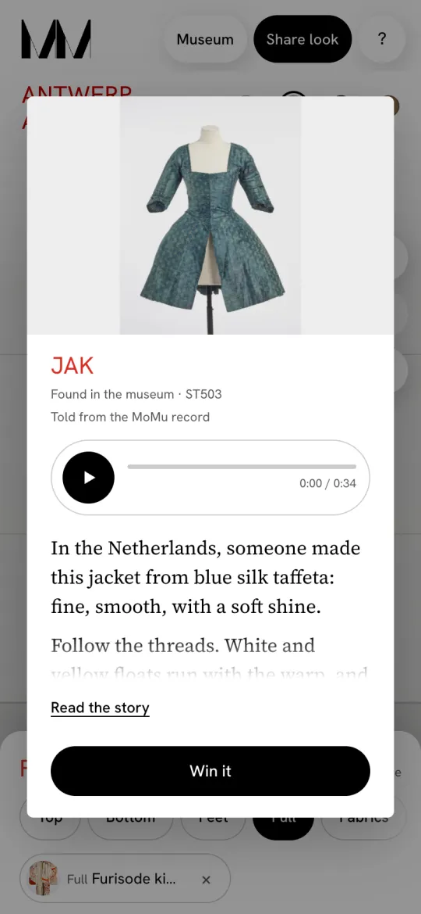
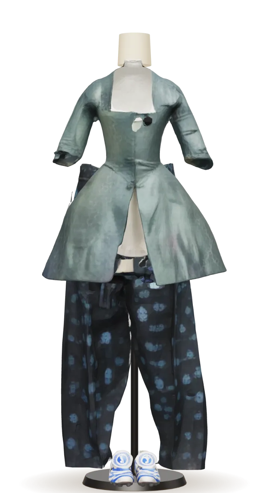
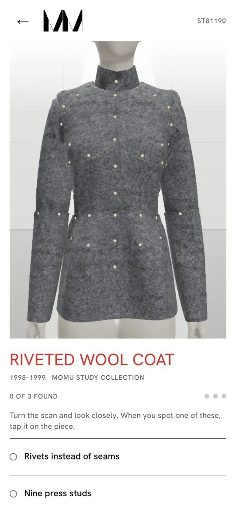
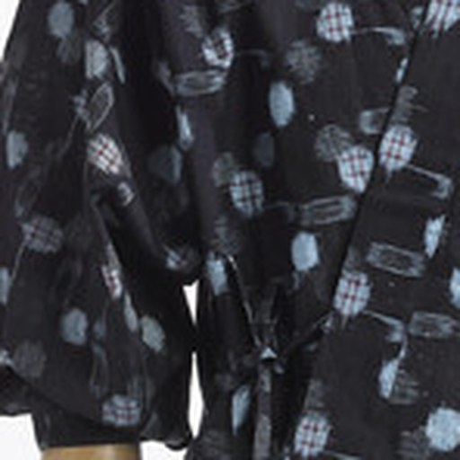
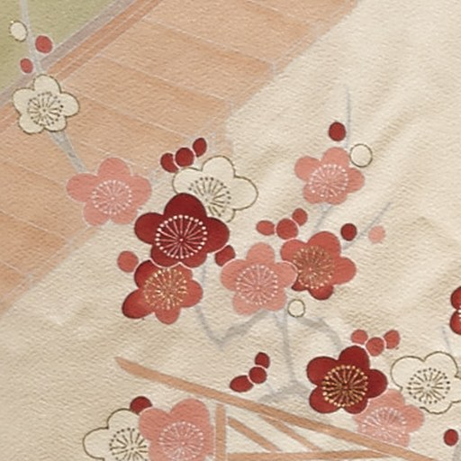
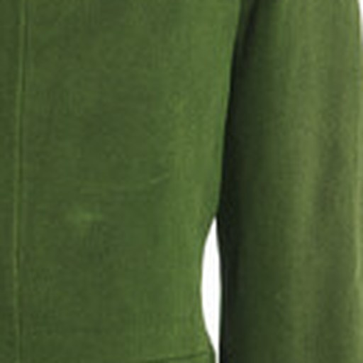
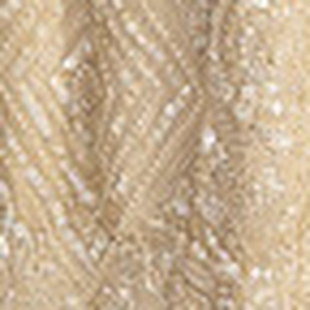
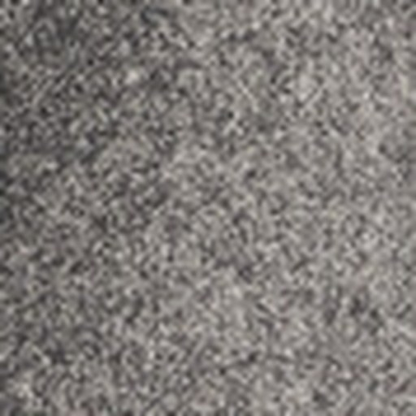
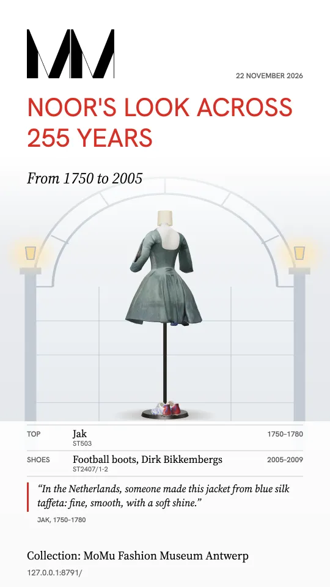

Wear 255 years of MoMu
Win real pieces from Antwerp's fashion museum by guessing when they were made. Then wear them, all at once.
Start dressingHow a visit goes
A friend brings you to MoMu's Study Collection: thousands of pieces in archive boxes, inventory numbers, labels in Dutch. Then you notice a small sticker beside a jacket from 1750.
-

Tap the sticker
ST503 · Jak · 1750 to 1780
Tap the MoMu sticker beside a piece and it opens on your phone, with its story read aloud. No app store, no account.
-
Guess the year, win the piece
ST503 · Jak · Top
When was it made? Drag the year and guess. Get within 25 years and the piece is yours. Missed? You get a hint, Earlier or Later, and another try.
Try it on the jak, right here.
-

1750 Jak 1965 Monpe trousers 2005 Football boots Wear it: one look, 255 years
ST503 · ST80931 · ST2407/1-2 · 1750 to 2005
Every piece you win goes into your wardrobe. Wear it with anything else you won: an eighteenth-century jak over 1965 monpe trousers, with Dirk Bikkembergs football boots from 2005.
Turn the look with your finger. The look tells you how many years it spans.
-

Look closer
ST81190 · Riveted wool coat · 1998 to 1999
Study pieces hide details that MoMu's record writes down. Find all three on the 3D model of A.F. Vandevorst's riveted wool coat from 1998, and you win its fabric.
- Rivets instead of seams
Joined together with brass-coloured rivets.
- Nine press studs
The coat closes at the centre front with nine brass-coloured press studs.
- A red cross at the back of the neck
A red cross is stitched on the back at neck height.
- Rivets instead of seams
-

Ikat 1950 to 1960
Furisode silk 1979
Green broadcloth 1795 to 1840
Sequins 1920 to 1925- Striped synthetic 1947 to 1950

Grey wool 1998 to 1999
Remix the fabrics
ST80930 on ST503 · 1950s ikat on a 1750 cut
Put the ikat of a 1950s vest on the body of a 1750 jak, or the furisode's painted silk on its sleeves. Centuries apart, in one look.
-

Share the look
Your look · 1750 to 2005 · credit: MoMu
Name your look and share it as a story-sized card: the pieces, the years they span, and a line from the museum's record. Then go and find the next sticker.
A visit in 44 seconds
Made from the app's real screens and MoMu's own photos. Sound on.
Every word from the museum
- Real recordsEvery date, name and quote comes from MoMu's own collection records. When a field is missing, the app says "not recorded" instead of guessing.
- Real piecesThe pieces you wear are MoMu's: 3D models made from the museum's photos, and MoMu's own CLO models where they exist.
- Nothing to installIt runs in your phone's browser. No account: your wardrobe stays on your phone.
- More waiting19 pieces to win today, picked from the 4622 objects in MoMu's public collection data.
The collection is waiting
Start with a starter wardrobe, or find a MoMu sticker at the Study Center and tap it.
Start dressing